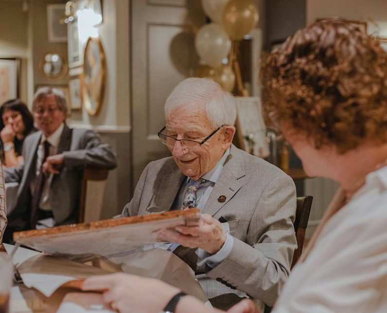

시리즈
-
 을유세계문학전집
을유세계문학전집136권. 오노레 드 발자크, 『결혼 계약』
프랑스의 대문호이자 90여 편에 이르는 장편 소설로 <인간극>이라는 거대한 세계를 구축한 발자크는 풍속의 역사가로 불릴 정도로 다양한 주제를 작품에 담았다. 특히 돈과 법은 발자크 소설의 주요 테마다. 국내 초역으로 소개되는 『결혼 계약』과 『금치산』은 이 주제를 정면으로 다루는 작품으로, 가족 간의 돈 문제에 법이 어떻게 개입하는지를 잘 보여 준다.
-
을유세계문학전집
135권. E. T. A. 호프만, 『밤 풍경』
E. T. A. 호프만은 에드거 앨런 포, 보들레르 같은 문인들뿐만 아니라 로베르트 슈만을 비롯한 음악가들에게까지 영향을 미친 작가로 후기 낭만주의 문학의 대가로 손꼽힌다. 그는 괴테나 실러 같은 고전주의자들과 달리 이성의 합리성으로 설명될 수 없는 상상력, 꿈과 환상의 세계를 탁월한 문체로 표현했다.
-
나이 든다는 것에 관하여
#5. 내려놓고 있는 그대로 받아들이기
내려놓는 것은 이별하는 마음으로 살아가는 삶에서 중요한 주제다. 예전이었다면 극복할 수 있었거나 지나치게 과했던 우리 자신을 향한 요구 사항들을 이제는 감당할 수 없게 되었다. 이러한 것들을 가벼운 마음으로, 어쩌면 아쉬운 마음으로 내려놓아야 한다. 일상생활의 측면에서 볼 때 내려놓기라는 주제는 신체의 활동성을 통해 쉽게 확인할 수 있다.
-
나이 든다는 것에 관하여
#4. 삶의 방향성을 새롭게 만드는 감정들
“예전보다 더 긴장돼요.” 이 말은 자신의 힘이 점점 약해지고 있다는 뜻이다. 이를 해결하려면 무엇이 필요할까? 자기 자신에 대한 공감, 긴장감을 새로운 것에 접근하는 감정으로 이해하는 것, 문제 상황에서 자신을 비판하거나 비하하지 않고 친절하게 바라보는 능력이 필요하다. 자기 자신에게 공감하는 능력은 키워 나갈 수 있다.
-
나이 든다는 것에 관하여
#3. 통제할 수 있는 것과 통제해야 하는 것
자신을 스스로 소외시키지 않고 항상 자신을 주변 세계의 일부로 인식하며, 언제든지 자신의 아이디어와 생각을 드러내는 것이 중요하다. 또한 항상 융통성 있게 행동해야 한다. 혼자 있으면서 나름의 생각과 상상을 마음껏 하되, 필요한 경우에는 다시 관계를 맺고 참여하는 것이 중요하다.